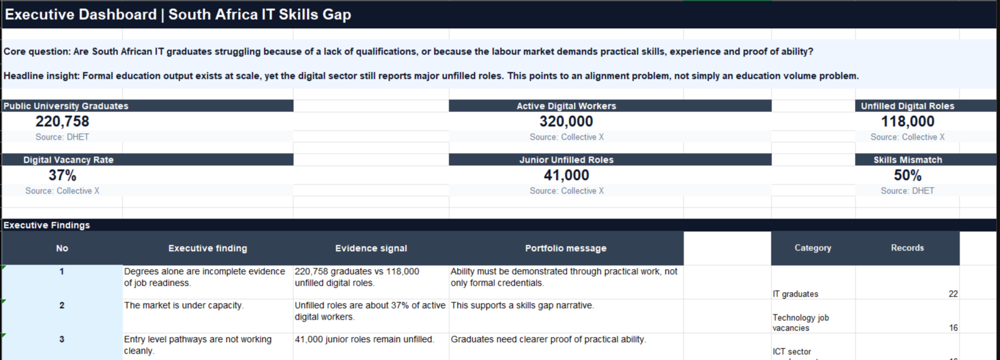
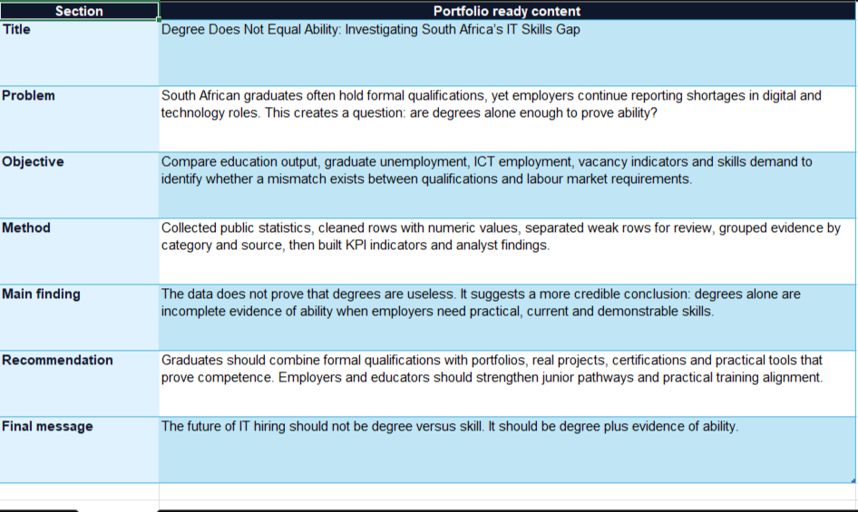

Degree Does Not Equal Ability
Investigating South Africa's IT Skills Gap
A research and analytics case study about whether formal qualifications alone are enough to prove workplace readiness in South Africa's technology sector.
Project Overview
Business problem: South African graduates often hold formal qualifications, yet employers continue reporting shortages in digital and technology roles. This creates a labor market question: are degrees alone enough to prove practical ability?
Objective: Compare education output, graduate unemployment, ICT employment, vacancy indicators, junior role demand, and skills mismatch evidence to identify whether a gap exists between qualifications and labor market requirements.
Methodology: I collected public statistics, cleaned records with numeric values, separated weak rows for review, grouped evidence by category and source, and built KPI indicators to support analyst findings.
Outcome: The data does not prove that degrees are useless. It supports a more credible conclusion: degrees alone are incomplete evidence of ability when employers need practical, current, and demonstrable skills.
Technologies Used
Excel, data analysis, labor market analytics, research analysis, data storytelling, business intelligence.
Key Findings
- 220,758 public HEI university graduates were identified in the evidence base.
- 118,000 total unfilled digital roles were recorded as a demand pressure indicator.
- 41,000 junior level digital roles remain unfilled, showing an entry level pathway challenge.
- The skills mismatch rate was estimated at 50 percent, signalling misalignment between available skills and required skills.
Screenshot Gallery



Business Impact
This project reframes the hiring conversation from degree versus skill to degree plus evidence of ability. It helps graduates understand why portfolios, real projects, certifications, and tool fluency matter, while helping employers and educators see where junior pathways need stronger practical alignment.
What This Project Demonstrates
The project demonstrates evidence based analysis, KPI development, data quality judgment, labor market interpretation, dashboard communication, and executive storytelling.
Back to Projects